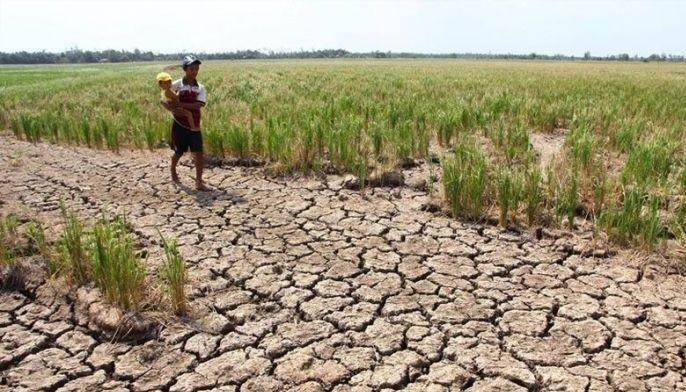
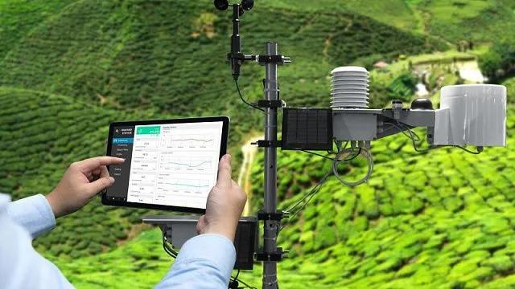
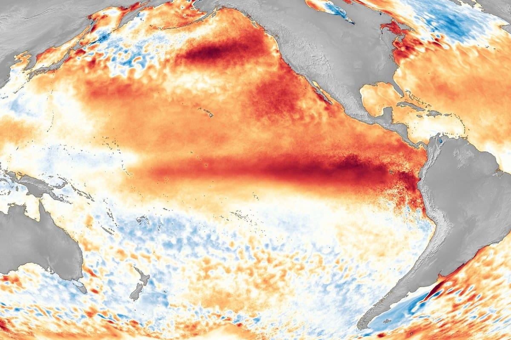
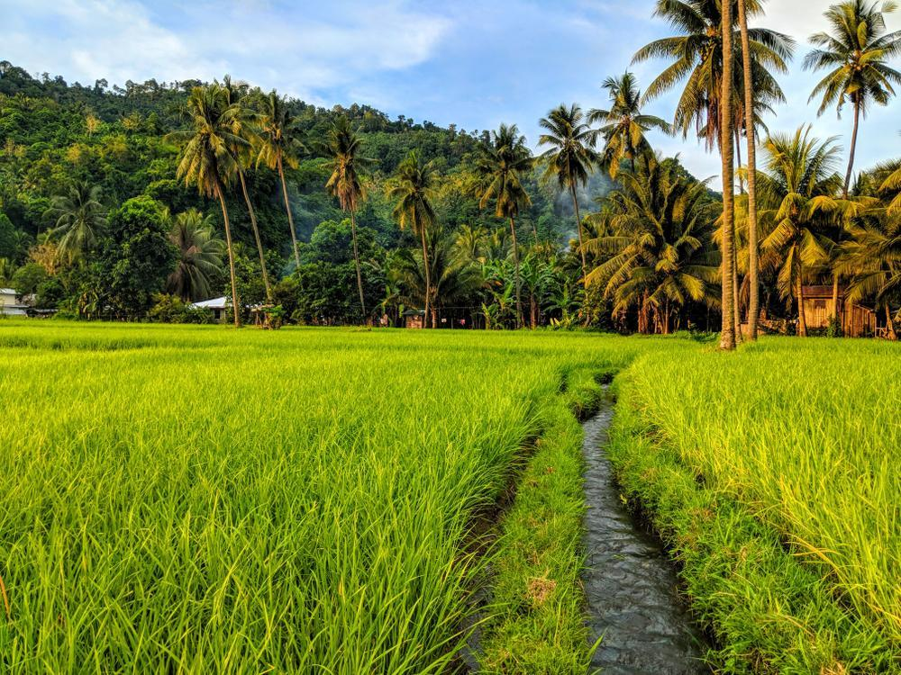
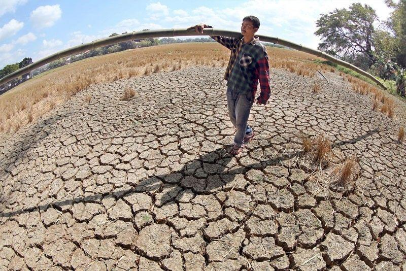
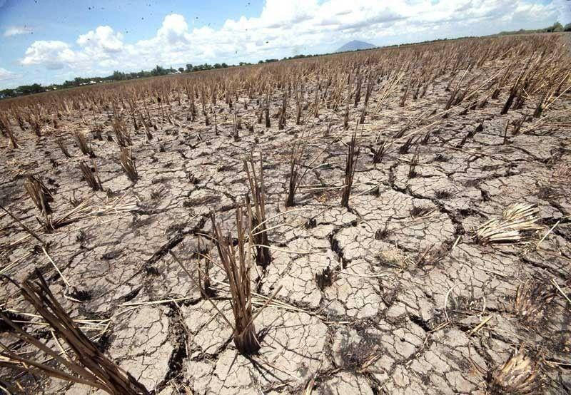
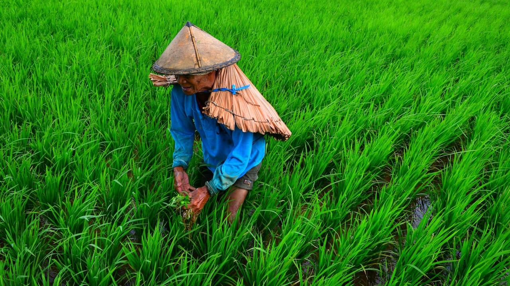
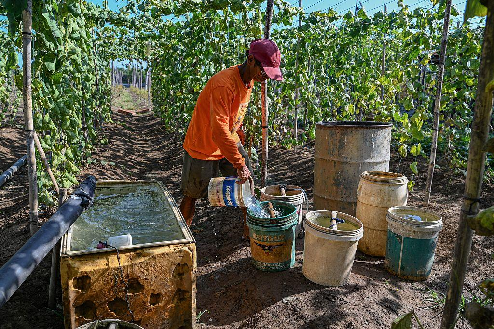

THE PHILIPPINES | CLIMATE AWARENESS
WHEN THE RAINS STOP.
Discover how El Niño affects the Philippines, its agriculture, and the communities that depend on the land.
Explore the Impact ↓Impact
El Nino is a climatic event where above normal sea surface temperature is detected over the Central and Eastern equatorial Pacific Ocean. It affects the air circulation and amount of rainfall around the world. For our country El Nino tends to have lower than normal rainfall. Which could result in hot and dry weather or drought. With lower rainfall we may have a problem with water consumption. As many areas rely on the supply of natural resources from time to time there will be shortage due to this effect. El Nino does not mean that all parts of the Philippines will be experiencing drought. There are still tropical cyclones that can bring a lot of rainfall to the area. PAGASA states that it can still rain but just not as much as what it normally does. With the effect of El Nino being Strong to Very strong it is possible that the lack of rain will continue until early 2027. This is why its important to know what El Nino can do to us. If we know more about this effect we can prepare ourselves when there is less rainfall.
What is El Niño?
El Niño occurs when sea surface temperatures become unusually warm in the central and eastern tropical Pacific Ocean.
Source: NOAA Climate.gov
El Niño and Drought Risk
El Niño increases the risk of below-normal rainfall, dry spells, and drought in parts of the Philippines, potentially affecting water supplies and agriculture.
Source: PAGASA
How Long Does El Niño Last?
El Niño events typically last around 9 to 12 months, although some episodes can last longer. Their duration varies depending on oceanic and atmospheric conditions.
Source: NOAA Climate.gov
Ocean Temperature Anomaly
El Niño is characterized by unusually warm ocean temperatures in the central and eastern tropical Pacific. Scientists monitor these temperature anomalies to evaluate El Niño conditions.
Source: NOAA Climate Prediction Center
El Niño and Philippine Rainfall
El Niño can increase the likelihood of below-normal rainfall in parts of the Philippines. Prolonged dry conditions may reduce water availability and affect agricultural production.
Source: PAGASA
El Niño Climate Outlook for 2027
PAGASA's October 2026 climate outlook indicated that strong to very strong El Niño conditions could persist into the first half of 2027, increasing the risk of prolonged dry conditions in parts of the Philippines.
Source: PAGASA - October 2026
Agricultural Damage
₱6.5 Billion
As of October 14, 2026, the NDRRMC reported nearly ₱6.5 billion in agricultural damage caused by El Niño across 10 regions of the Philippines.
Source: Philippine News Agency - October 14, 2026
Farmers Affected in Kalinga
2,840 Farmers
Agricultural authorities reported that El Niño affected 2,840 farmers and damaged 4,142.13 hectares of agricultural land in Kalinga, based on figures through June 2026.
Source: Philippine Information Agency - October 7, 2026
Government Response
₱7.86 Billion
On October 19, 2026, the Philippine government reported setting aside ₱7.86 billion in disaster response funding to address the impacts of El Niño.
Source: Philippine News Agency - October 19, 2026THE HUMAN IMPACT
WHEN THE LAND RUNS DRY.
El Nino has one of its biggest impacts on agriculture. As many areas in the Philippines have farms they will use water or rely on rain fall to have sufficient irrigation to their plants. During these times when there is not much rain falling for an extended period of time. There could be less water available in agricultural lands leading to low soil moisture and poor conditions for plant life. Some of the crops that can be impacted by this include rice and corn if they don't have access to enough water to irrigate.
Not only can drought take an effect on agricultural lands but also on those who make their living off of it. Not being able to produce enough food can lead to poverty and more problems that occur from lack of money. As of March 11th there has been over 1.23 Billion pesos worth of damages caused to the Philippines due to El Nino 2024. Over 29 thousand farmers and fisherfolk have been affected by the drought that occurred. Which shows us that when there is drought it can lead to many problems.
By having enough water stored and using proper agricultural methods we can help reduce the impact of El Nino. PAGASA recommends to store water and ensure that you have working irrigation. Collect rain water and grow crops that can withstand less water and keep the soil moist. There have been cases in Pangasinan where crops were saved due to having irrigation water available during the El Nino of 2024. So by having preparedness and knowing what resources are available to you can help reduce the impacts of El Nino.